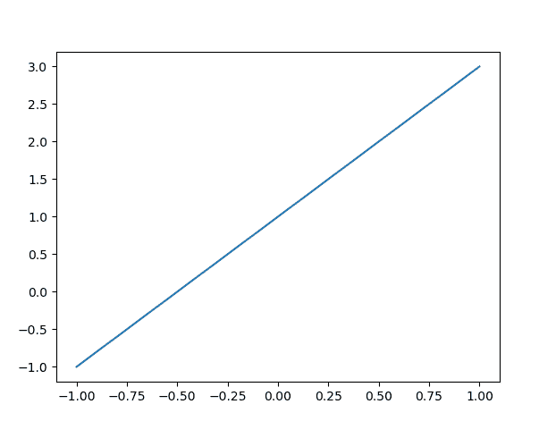
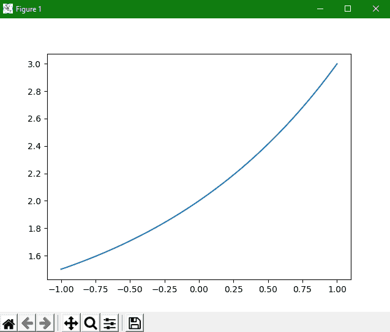

Matplotlib 简单折线图
在本教程中，我们将介绍 Matplotlib 中的简单折线图。
单线功能即y=f(x)的可视化是所有功能中最简单的。让我们看一下创建这种类型的简单情节。在本教程中，我们将介绍以下简单的折线图:
y=f(x)型直线正弦函数的图形
用多条线创建单个图形(正弦和余弦函数)
曲线
现在第一步也是最重要的一步是设置用于绘图的笔记本和导入我们将使用的那些功能:
1.正在导入 Matplotlib
要导入 Matplotlib，您只需要编写以下命令:
import matplotlib.pyplot as plt
为了方便起见，我们将导入一个别名为 plt 的 matplotlib。
2.正在导入 Numpy
我们将绘制数字；所以为了绘制数字，我们需要一个数组。在 Python 的 Numpy 模块中，有很多创建数组的功能。所以我们也会在代码中导入 Numpy 。为了方便起见，我们将使用别名 np 导入 Numpy。
其命令如下:
import numpy as np
Matplotlib 中y=f(x)类型的图形
让我们看看最简单等式的代码片段:
import matplotlib.pyplot as plt
import numpy as np
x = np.linspace(-1, 1, 50)
print(x)
y = 2*x + 1
plt.plot(x, y)
plt.show()
在上面的代码示例中，plot(x, y)函数主要用于绘制直线。这个代码片段的输出如下所示:

Matplotlib 中正弦波的图形
现在我们将向您展示使用 matplotlib 可视化正弦波。其代码片段如下所示:
代码说明
让我们看一下代码的简要解释:
第一步是导入别名为 plt 的
matplotlib.pyplot。下一步是用 np 的别名导入 Numpy ，以便使用与其相关的数组和函数。
然后我们导入了数学模块，用于可视化中所需的数学计算。
现在使用
arange()功能从 NumPy 库获得 0 和 2(饼图)之间的标准角度对象。为了绘制两个数组的值，我们使用了
plot()函数。在后面的两行中，我们已经设置了图形的 x 和 y 标签。
之后在下一行，我们已经借助
title()功能为图形设置了标题。为了显示图形，我们使用了
show()功能。
用多条线创建单个图形
如果你想创建一个包含多条线的单一图形，那么你只需要多次调用绘图函数。
其代码如下:
用曲线创建图形
在 Matplotlib 中使用plot()方法绘制任意一条线。没有必要总是一条直线，就像我们刚刚在上面的例子中看到的，我们如何绘制一个波。我们也可以画一条曲线。
让我们举一个 Matplotlib 中的简单曲线的例子:
import matplotlib
import matplotlib.pyplot as plt
import numpy as np
x = np.linspace(-1, 1, 50)
y = 2**x + 1
plt.plot(x, y)
plt.show()
其输出如下所示:

在本教程中，我们已经介绍了如何绘制直线、如何绘制曲线、单正弦波，我们还介绍了绘制多条线。
这都是关于在 Matplotlib 中绘制简单函数。现在在我们的后续教程中，我们将使用 matplotlib 讲述更多神奇的事情。我们将深入探讨如何控制轴和线的外观的更多细节。